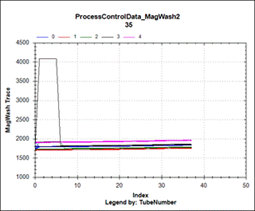
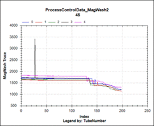

MT1 – Aspirators Not Functioning at the Start of the Wash Cycle
MT1 – Assay Processing Flag
Complaint Description
Aspirators not functioning at the start of the wash cycle. This may be due to a hardware problem or defective MTU.
Technical Support
Operator Error
Visually inspect the area around the Input Queue and Lower Bay for stray tiplets. A hasty user may cause tips to fall out of the MTUs during loading.
RESOLUTION:
- Visually inspect the area around the Input Queue and Lower Bay for stray tiplets.
- Train the user to load MTUs carefully, and to check for stray tiplets.
Field Service
Operator error
Visually inspect the area around the Input Queue and Lower Bay for stray tiplets. A hasty user may cause tips to fall out of the MTUs during loading.
RESOLUTION:
- Visually inspect the area around the Input Queue and Lower Bay for stray tiplets.
- Train the user to load MTUs carefully and to check for stray tiplets.
Service Drawer not fully engaged
Check to see if the Service Drawer is fully closed.
RESOLUTION:
Close the Service Drawer.
Improperly Taught Distributor may place the MTU improperly
Check Distributor teaching at the Magnetic Wash Station.
RESOLUTION:
Teach the Distributor.
Improperly Installed Module may allow the MTU to be placed improperly
- Check for improperly installed module.
- Look at the front-lower foot of the Magnetic Wash Station Module.
- Observe whether the module is fully seated onto the alignment pin.
RESOLUTION:
Loosen the 4 mm screw on the top of the Magnetic Wash Station Module, then re-seat the module onto the alignment pin.
Magwash - 0x30 0x31 MT1 ML2
Xxx.xxx.xxxxxx - Flags: MT1 ML2
FIR value is moving in wrong direction and very large move.
Tip strip failure (for this aspirator, tip off = 1800, tip on = 1760).

ML2 failure (value should drop not increase when liquid is detected)

The level sense board or cable may be faulty.
902791 = MW level sense PCB
903131 = MW lls flex cable
Resolution:
If issue comes back, instrument will need a new MW, as the MW Main PCB is not replaceable.
 button at the top of the page to send feedback, comments, or change requests.
button at the top of the page to send feedback, comments, or change requests.